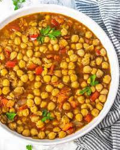

Chickpea Stew

Description:
Middle eastern chickpea stew, sometimes referred to as curried chickpea stew.
Ingredients
- 2 tablespoons olive oil
-
1 large onion, finely chopped
- 3 cloves of garlic, minced
-
1 teaspoon ground cumin
- 1 teaspoon ground coriander
- 1/2 teaspoon ground turmeric
- 1/2 teaspoon paprika
-
1/4 teaspoon cayenne pepper (optional, for heat)
- 1 can (14 ounces/400g) diced tomatoes
-
2 cans (15 ounces/425g each) chickpeas, drained and rinsed
- 1 cup (240ml) vegetable or chicken broth
- 1 cup (240ml) coconut milk
- Salt, to taste
-
Freshly ground black pepper, to taste
-
Chopped fresh cilantro, for garnish (optional)
- Cooked rice or warm pita bread, for serving
- Heat the olive oil in a large pot or Dutch oven over medium heat. Add the chopped onion and minced garlic, and sauté until they become soft and translucent.
- Add the ground cumin, ground coriander, ground turmeric, paprika, and cayenne pepper (if using) to the pot. Stir well to coat the onions and garlic with the spices, and let them cook for about a minute to release their flavors.
- Add the diced tomatoes to the pot and stir them in with the onion and spice mixture. Allow them to cook for a few minutes until they start to soften.
- Add the drained and rinsed chickpeas to the pot, followed by the vegetable or chicken broth and coconut milk. Stir everything together and bring the mixture to a simmer.
- Reduce the heat to low, cover the pot, and let the stew simmer for about 20-30 minutes, allowing the flavors to meld together and the chickpeas to soften. Stir occasionally to prevent sticking.
- Taste the stew and season with salt and black pepper according to your preference.
- Once the chickpea stew is cooked and the flavors have developed, remove it from the heat.
- Serve the Middle Eastern chickpea stew hot over cooked rice or with warm pita bread. If desired, garnish with chopped fresh cilantro for added freshness and flavor.